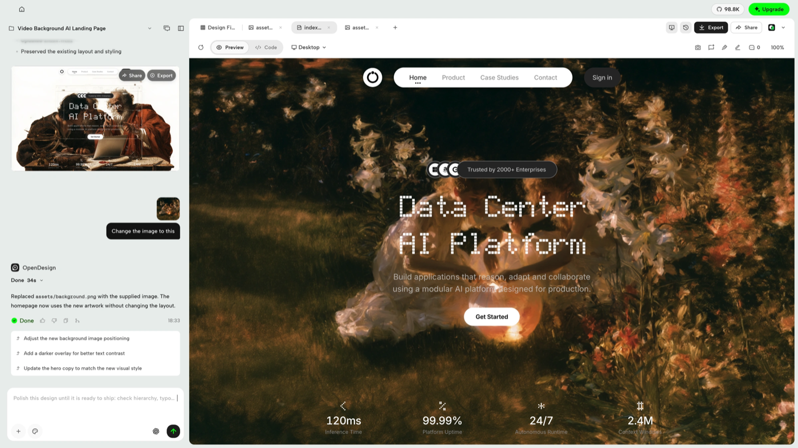
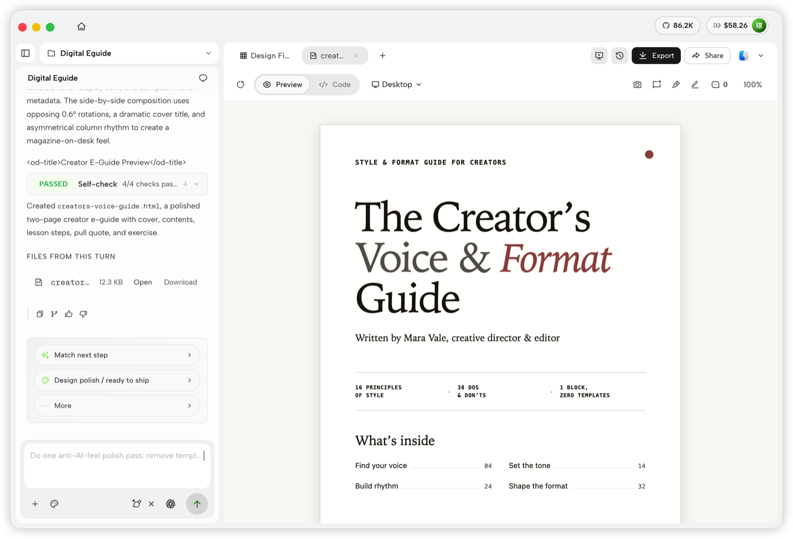

Extends: New. The chat composer of S35 (F114) gains a sparkle button left of Send. Pattern reference: the Enhance prompt button in WorkBuddy’s composer (described, not copied).
Lives in: Spekin web app · the composer of every stage chat (/p/meranti-yard/design and the other stages); the proposal is local UI state, never in the route.
Used 5,000 of 5,000 cr this month. Enhance needs about 2 cr. Your draft is untouched.
No connection. Enhance needs the server; your draft is kept on this device and can still be sent when you are back online.
The enhance run failed (E-503). Nothing was charged and your draft is unchanged.

